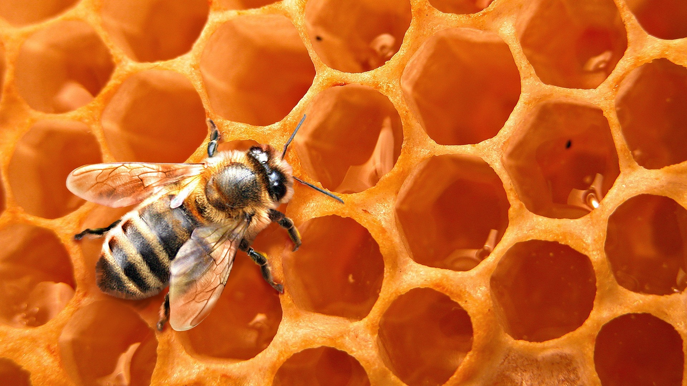

Bee Colony Numbers Across the US
US Heat Map for bee colony numbers.
Image
context
Parallel Coordinate Chart
Chart for bee colony population, colony loss, number of added colonies, and number of renovated colonies.
Image
context.
By Angela Rubalcava
This project will be able to communicate the rate at which bees are dying and what is contributing to their demise through easy-to-read charts and novel ways to engage the reader/viewer to care more about not just bees, but the well-being of our planet. In order to do this the project will include: - An overview of the bee colony population in every state in the US - Insight as to what variables/stressors have caused bee colonies to die - Compare bee colony population across different states - Analyze states that have renovated and added colonies - Point out how renovations efforts help bee colony population
The fact that our planet is dying is no longer a faraway threat. Countless ecosystems and necessary life on our planet has been destroyed due to humanity’s need for more. Bee’s are currently dying at an alarming rate and both our economy and ecosystem are not prepared for a world without bees. I want to bring attention to an issue that has been known for a while, but it is hard to visualize the scale at which bee colonies are dying and why.

For more information and details on Bee Colonies:
context
context.